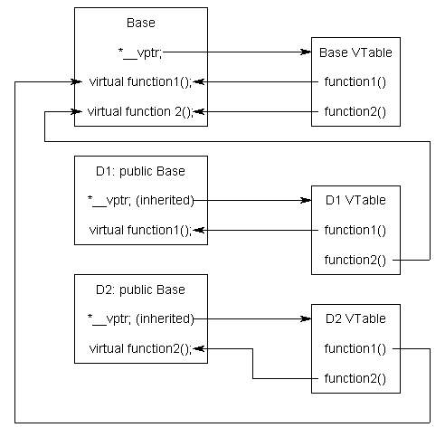

25.6 — La table virtuelle
Considérons le programme suivant :
#include <iostream>
#include <string_view>
class Base
{
public:
std::string_view getName() const { return "Base"; } // non virtuelle
virtual std::string_view getNameVirtual() const { return "Base"; } // virtuelle
};
class Derived: public Base
{
public:
std::string_view getName() const { return "Derived"; }
virtual std::string_view getNameVirtual() const override { return "Derived"; }
};
int main()
{
Derived derived {};
Base& base { derived };
std::cout << "base has static type " << base.getName() << '\n';
std::cout << "base has dynamic type " << base.getNameVirtual() << '\n';
return 0;
}
Commençons par l'appel base.getName(). Comme il s'agit d'une fonction non virtuelle, le compilateur peut utiliser le type réel de base (Base) pour déterminer, à la compilation, que cet appel correspond à Base::getName().
Bien que l'écriture soit presque identique, l'appel base.getNameVirtual() doit être résolu différemment. Comme il s'agit d'un appel de fonction virtuelle, le compilateur doit utiliser le type dynamique de base pour résoudre l'appel, et ce type dynamique n'est connu qu'à l'exécution. Par conséquent, ce n'est qu'à l'exécution que l'on déterminera que cet appel particulier à base.getNameVirtual() correspond à Derived::getNameVirtual() et non à Base::getNameVirtual().
Alors, comment fonctionnent réellement les fonctions virtuelles ?
La table virtuelle
La norme C++ ne précise pas la manière dont les fonctions virtuelles doivent être implémentées (ce détail est laissé à l'implémentation).
Cependant, les implémentations C++ utilisent généralement une forme de liaison tardive (late binding) connue sous le nom de table virtuelle.
La table virtuelle (virtual table) est une table de recherche de fonctions utilisée pour résoudre les appels de fonctions de manière dynamique, c'est-à-dire par liaison tardive. Cette table porte parfois d'autres noms, comme « vtable », « virtual function table », « virtual method table » ou « dispatch table ». En C++, la résolution des fonctions virtuelles est parfois appelée envoi dynamique (dynamic dispatch).
Nomenclature
Voici une façon plus simple de voir les choses en C++ :
Liaison précoce/envoi statique = résolution de surcharge pour un appel direct de fonction
Liaison tardive = résolution d'un appel indirect de fonction
Envoi dynamique = résolution de la redéfinition de fonction virtuelle
Comme la connaissance du fonctionnement de la table virtuelle n'est pas nécessaire pour utiliser les fonctions virtuelles, cette section peut être considérée comme une lecture facultative.
La table virtuelle est en réalité assez simple, bien qu'un peu complexe à décrire en mots. Premièrement, chaque classe qui utilise des fonctions virtuelles (ou qui dérive d'une classe utilisant des fonctions virtuelles) possède une table virtuelle correspondante. Cette table est simplement un tableau statique que le compilateur construit à la compilation. Une table virtuelle contient une entrée pour chaque fonction virtuelle pouvant être appelée par les objets de la classe. Chaque entrée de cette table est simplement un pointeur de fonction qui pointe vers la fonction la plus dérivée accessible à cette classe.
Deuxièmement, le compilateur ajoute également un pointeur caché, membre de la classe de base, que nous appellerons *__vptr. *__vptr est initialisé automatiquement lors de la création d'un objet de la classe, de manière à pointer vers la table virtuelle de cette classe. Contrairement au pointeur this, qui est en réalité un paramètre de fonction utilisé par le compilateur pour résoudre les auto-références, *__vptr est un véritable membre pointeur. Par conséquent, il augmente la taille de chaque objet alloué de la taille d'un pointeur. Cela signifie aussi que *__vptr est hérité par les classes dérivées, ce qui est important.
À ce stade, vous êtes probablement perdu quant à la manière dont tout cela s'articule. Examinons donc un exemple simple :
class Base
{
public:
virtual void function1() {};
virtual void function2() {};
};
class D1: public Base
{
public:
void function1() override {};
};
class D2: public Base
{
public:
void function2() override {};
};
Comme il y a ici 3 classes, le compilateur va construire 3 tables virtuelles : une pour Base, une pour D1 et une pour D2.
Le compilateur ajoute également un membre pointeur caché à la classe de base la plus élevée qui utilise des fonctions virtuelles. Bien que le compilateur le fasse automatiquement, nous l'écrirons dans l'exemple suivant afin de montrer où il est ajouté :
class Base
{
public:
VirtualTable* __vptr;
virtual void function1() {};
virtual void function2() {};
};
class D1: public Base
{
public:
void function1() override {};
};
class D2: public Base
{
public:
void function2() override {};
};
Lorsqu'un objet de la classe est créé, *__vptr est initialisé de manière à pointer vers la table virtuelle de cette classe. Par exemple, lorsqu'un objet de type Base est créé, *__vptr est initialisé pour pointer vers la table virtuelle de Base. Lorsque des objets de type D1 ou D2 sont construits, *__vptr est initialisé pour pointer respectivement vers la table virtuelle de D1 ou de D2.
Voyons maintenant comment ces tables virtuelles sont remplies. Comme il n'y a ici que deux fonctions virtuelles, chaque table virtuelle contiendra deux entrées (une pour function1() et une pour function2()). Rappelez-vous que, lors du remplissage de ces tables, chaque entrée est renseignée avec la fonction la plus dérivée qu'un objet de ce type de classe peut appeler.
La table virtuelle des objets Base est simple. Un objet de type Base ne peut accéder qu'aux membres de Base. Base n'a aucun accès aux fonctions de D1 ou de D2. Par conséquent, l'entrée de function1 pointe vers Base::function1() et l'entrée de function2 pointe vers Base::function2().
La table virtuelle de D1 est légèrement plus complexe. Un objet de type D1 peut accéder aux membres de D1 et de Base. Cependant, D1 a redéfini function1(), ce qui rend D1::function1() plus dérivée que Base::function1(). Par conséquent, l'entrée de function1 pointe vers D1::function1(). D1 n'a pas redéfini function2(), donc l'entrée de function2 pointera vers Base::function2().
La table virtuelle de D2 est similaire à celle de D1, sauf que l'entrée de function1 pointe vers Base::function1() et l'entrée de function2 pointe vers D2::function2().
Voici une représentation graphique de ceci :

Bien que ce schéma ait un aspect un peu compliqué, il est en réalité très simple : le *__vptr de chaque classe pointe vers la table virtuelle de cette classe. Les entrées de la table virtuelle pointent vers la version la plus dérivée de la fonction que les objets de cette classe ont le droit d'appeler.
Examinons donc ce qui se passe lorsque nous créons un objet de type D1 :
int main()
{
D1 d1 {};
}
Comme d1 est un objet de type D1, son *__vptr est initialisé pour pointer vers la table virtuelle de D1.
Maintenant, faisons pointer un pointeur de base vers D1 :
int main()
{
D1 d1 {};
Base* dPtr = &d1;
return 0;
}
Notez que, comme dPtr est un pointeur de base, il ne pointe que sur la partie Base de d1. Cependant, notez aussi que *__vptr se trouve dans la partie Base de la classe, si bien que dPtr a accès à ce pointeur. Enfin, notez que dPtr->__vptr pointe vers la table virtuelle de D1 ! Par conséquent, bien que dPtr soit de type Base*, il a tout de même accès à la table virtuelle de D1 (par l'intermédiaire de __vptr).
Que se passe-t-il alors lorsque nous appelons dPtr->function1() ?
int main()
{
D1 d1 {};
Base* dPtr = &d1;
dPtr->function1();
return 0;
}
Premièrement, le programme reconnaît que function1() est une fonction virtuelle. Deuxièmement, le programme utilise dPtr->__vptr pour accéder à la table virtuelle de D1. Troisièmement, il cherche dans la table virtuelle de D1 la version de function1() à appeler. Cette entrée a été initialisée à D1::function1(). Par conséquent, dPtr->function1() correspond à D1::function1() !
Vous pourriez maintenant vous demander : « Et si dPtr pointait en réalité vers un objet Base et non vers un objet D1 ? Appellerait-il quand même D1::function1() ? » La réponse est non.
int main()
{
Base b {};
Base* bPtr = &b;
bPtr->function1();
return 0;
}
Dans ce cas, lorsque b est créé, b.__vptr pointe vers la table virtuelle de Base, et non vers celle de D1. Comme bPtr pointe vers b, bPtr->__vptr pointe également vers la table virtuelle de Base. L'entrée de la table virtuelle de Base pour function1() pointe vers Base::function1(). Ainsi, bPtr->function1() correspond à Base::function1(), qui est la version la plus dérivée de function1() qu'un objet Base peut appeler.
Grâce à ces tables, le compilateur et le programme parviennent à garantir que les appels de fonctions correspondent à la fonction virtuelle appropriée, même si vous n'utilisez qu'un pointeur ou une référence vers une classe de base !
Un appel de fonction virtuelle est plus lent qu'un appel de fonction non virtuelle, pour plusieurs raisons. Premièrement, il faut utiliser *__vptr pour accéder à la table virtuelle appropriée. Deuxièmement, il faut indexer la table virtuelle pour trouver la fonction correcte à appeler. Ce n'est qu'alors que la fonction peut être appelée. Par conséquent, il faut effectuer 3 opérations pour trouver la fonction à appeler, contre 2 opérations pour un appel indirect ordinaire, et une seule pour un appel direct. Toutefois, sur les ordinateurs modernes, ce surcoût en temps est généralement assez négligeable.
Rappelons également que toute classe utilisant des fonctions virtuelles possède un *__vptr, et que chaque objet de cette classe est donc plus grand d'un pointeur. Les fonctions virtuelles sont puissantes, mais elles ont un coût en termes de performances.
Source originale : https://www.learncpp.com/cpp-tutorial/the-virtual-table/